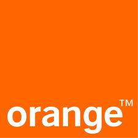

WAP Telebank
- Для получения и просмотра информации о ваших текущих счетов, карточка, депозит и получить кредит курса и валютной установленном НБМ, и EuroCreditBank TeleBANK.MD системы.
-
Доступ к данной услуге, может получить любой владелец мобильного телефона WAP/GPRS/3G поддержку любого типа доступа в Интернет. Для этого просто установить мобильного доступа в Интернет и доступа к сайту wap.telebank.md
Вы можете оплатить
